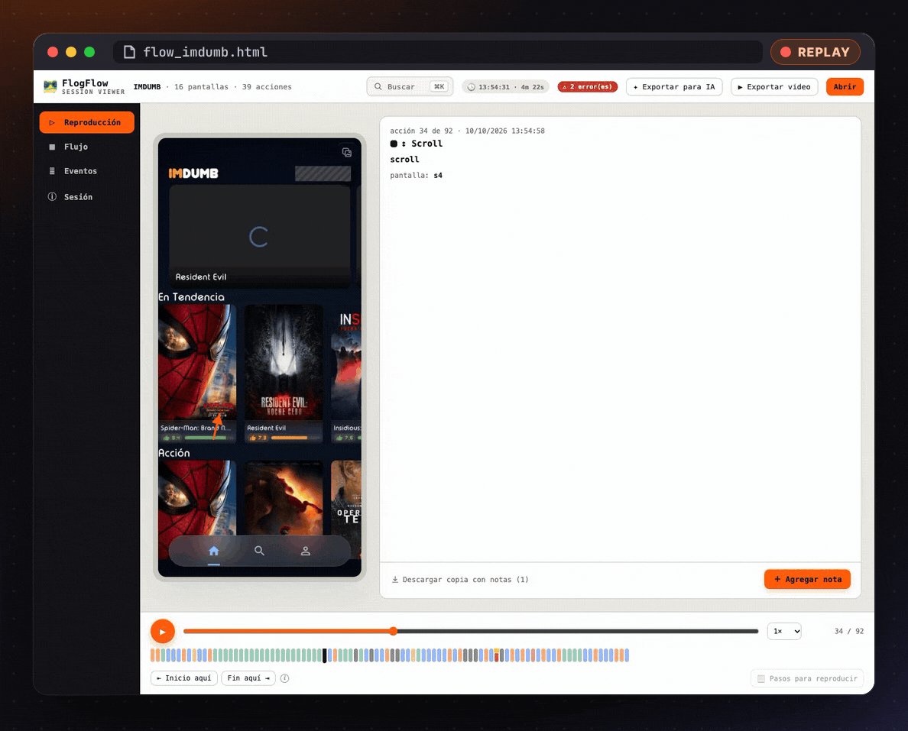
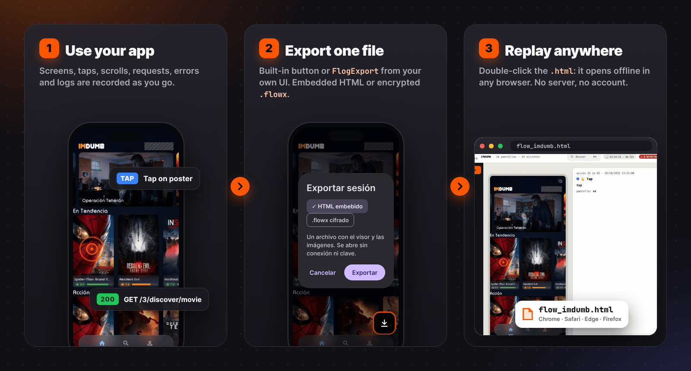
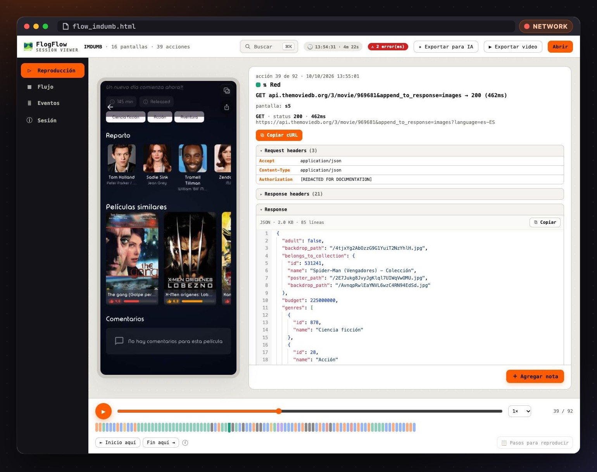
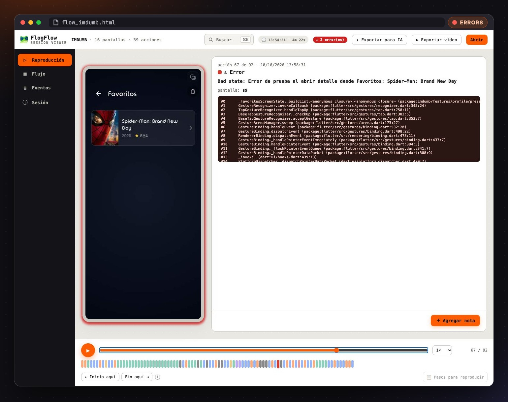
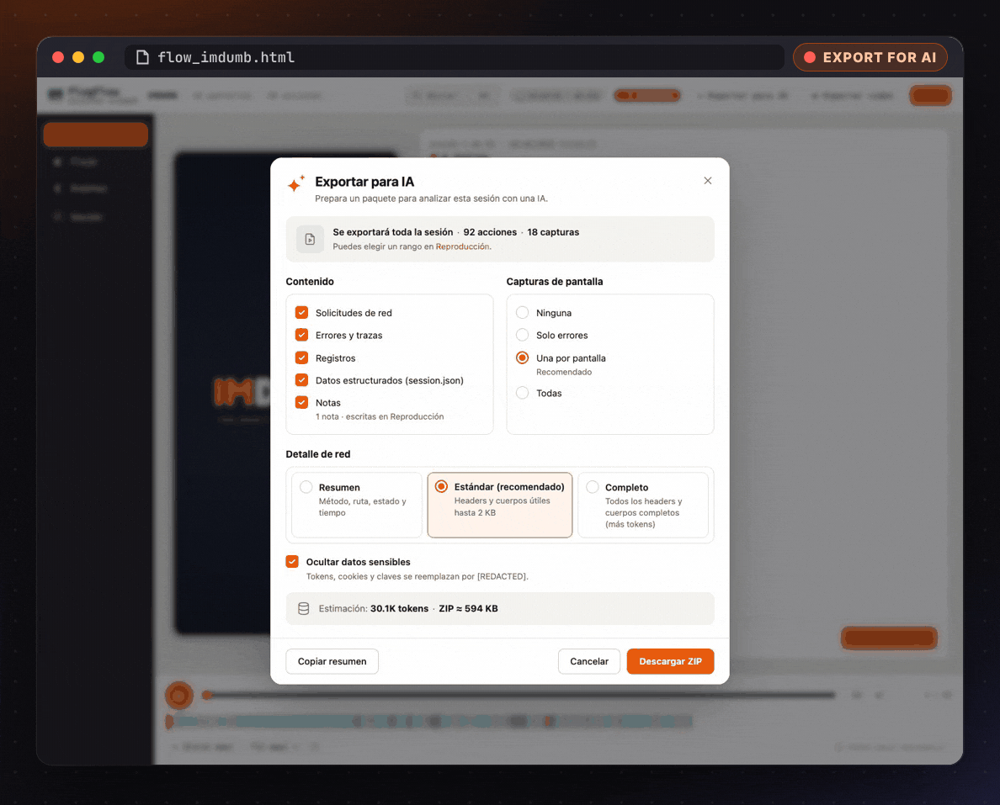
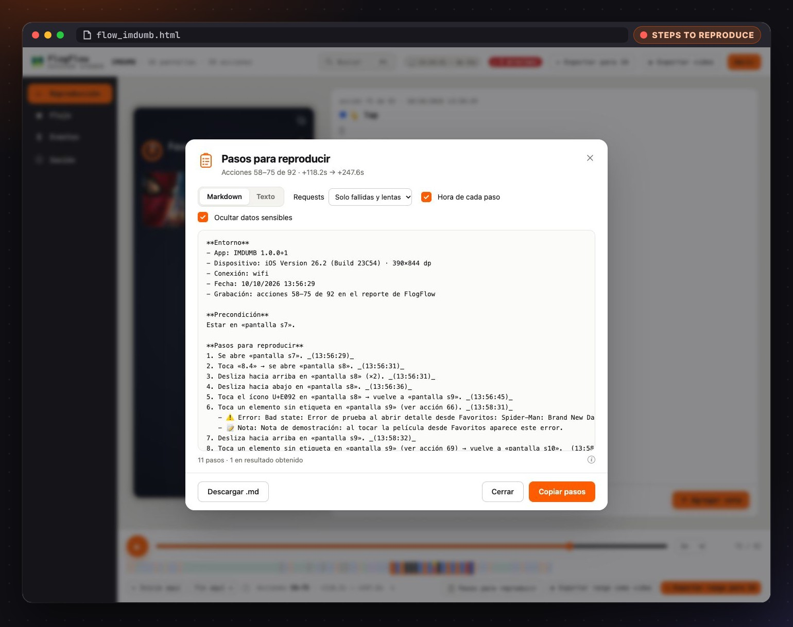
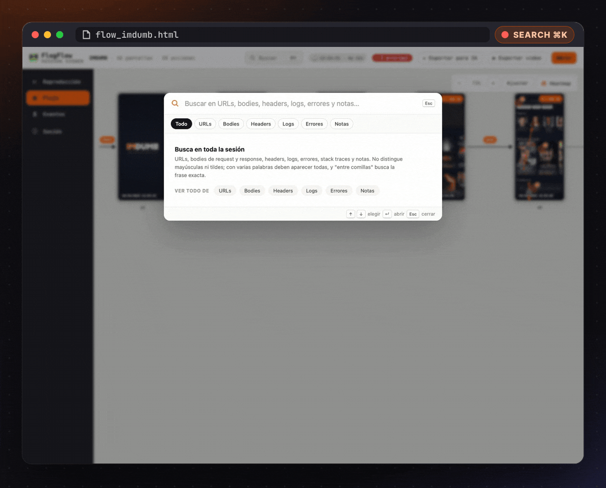

flog_flow records what a user does in your Flutter app and exports it as a single self-contained .html: screens, taps, network, errors and logs on one timeline. Attach it to a ticket, send it over Slack, open it with a double click.
flutter pub add flog_flow
Recording runs inside your app while testers use it. When something looks wrong, they export the session and send one file; whoever opens it sees exactly what happened, in order.

16 screens, 39 interactions, 31 requests and two recorded errors, rendered as an MP4 by the viewer itself. Authorization headers were removed for this demo.
Every screen and interaction, in order: the exact point of each tap, the direction of each scroll and the navigation it triggered. Play it like a video or move with the arrow keys.
Each request sits next to the tap that caused it: method, URL, status, duration, headers and bodies with a JSON viewer. Repeat any request from a terminal.
flog_flow_diopackage:http through flog_flow_httprecordHttpCall
Every error is stored with its stack trace and a screenshot of the screen it happened on, in the same timeline as the taps and requests that led to it.

One click builds a configurable .zip for Claude, ChatGPT or Gemini: a readable session.md, a session.json and the key screenshots, starting with automatic findings. Secrets are hidden by default.

Select a range of the timeline and get the bug report written: environment, precondition, numbered steps, observed and expected result. Markdown for Jira, GitHub or Slack.

⌘K / Ctrl+K searches URLs, bodies, headers, logs, errors and notes, and jumps to the matching action with every hit highlighted.

.flowx, shared from the app in one tap..html for the next person.RedactedZone for the rest.The README also includes a prompt that lets your AI coding assistant install it for you.
# the core package flutter pub add flog_flow # if you use Dio flutter pub add flog_flow_dio # if you use package:http flutter pub add flog_flow_http
await FlogFlow.instance.start(appName: 'MyApp'); MaterialApp( navigatorObservers: [FlogFlow.instance.newNavigatorObserver()], builder: (context, child) => FlogFlogScope( showExportButton: true, child: child!, ), );
| Package | Use it when |
|---|---|
| flog_flow | Always: recorder, export and viewer |
| flog_flow_dio | Your app uses Dio |
| flog_flow_http | Your app uses package:http (or a package built on it) |
Give your testers one button, and your developers the whole story.
Get flog_flow on pub.dev